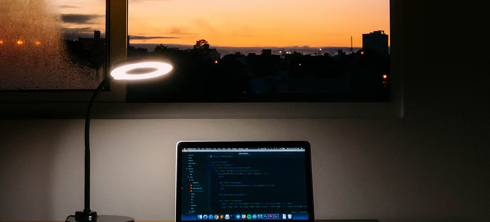

I started my journey in web development on September 15, 2024,by joining Dugisye’s Full Stack Mentorship Program. From day one,I was excited to dive into coding and begin building the skills necessary to become a professional full-stack developer
In the first month, I focused fully on HTML, completing the course and taking on small challenges to practice what I learned. These exercises helped me understand the structure of web pages and build confidence in creating functional websites.
Over the next three months, I completed the CSS course, learning how to style web pages and make them visually appealing. I also started learning GitHub and collaboration techniques. During this time, I worked with Faiza and Kafi, two fellow students, to recreate a website template we found online using only HTML and CSS. This project taught me valuable teamwork skills and how to collaborate effectively on coding projects.
In early 2025, I started learning JavaScript. It was my first programming language, and I faced many challenges, which is normal for beginners. Unfortunately, my subscription to the program ended during this period, and I had to pause my learning before fully mastering JavaScript.
Determined to continue my journey, I joined FreeCodeCamp to keep practicing and improving my skills. At the same time, I researched affordable bootcamps that provide the same quality of mentorship as Dugisye. My friend Usame recommended an amazing bootcamp where you can code live while the teacher explains, seeing real-time changes and completing challenges in one screen.
I decided to start again from scratch, learning HTML, CSS, GitHub, JavaScript, React, Next.js, Node.js, and databases. This program involves 108 hours of focused learning, combining theory, practical exercises, and real-world projects. Now, I am near the end of this journey, proud of the progress I’ve made, and excited about the opportunities that lie ahead as a full-stack developer.
This journey has been full of challenges, learning, and growth. From facing my first programming struggles in JavaScript to collaborating on projects and mastering new technologies, every step has brought me closer to my goal. I am motivated to continue building projects, expanding my skills, and pursuing a career in web development.